实现简单的加壳器（一）
实现加壳器（一）PE文件格式解析
这里使用010Editor随意打开一个exe文件，可以看到识别为以下各部分
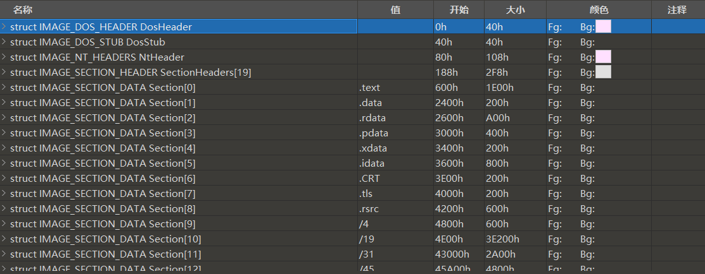
方便之后读相关结构体，先了解相应的数据类型
BYTE,WORD,DWORD, 和QWORD是计算机中常见的数据类型大小单位。它们通常表示不同字节大小的整数或数据。
- BYTE：
- 字节是计算机中的最小存储单元，通常由8个比特（或位）组成。
BYTE通常用来表示一个无符号的8位整数，其范围为0到255。- 在C/C++编程中，
BYTE通常是unsigned char的别名，用于表示一个8位的无符号整数。- WORD：
WORD通常指代一个16位的数据类型。- 在不同的编程语言和架构中，
WORD可能有不同的大小，但通常它表示一个16位整数。- 在x86和x86-64架构上，
WORD通常是2字节（16位）大小。- DWORD：
DWORD代表一个32位的数据类型。- 在x86和x86-64架构上，
DWORD通常是4字节（32位）大小。DWORD可以用来表示一个32位的无符号整数，其范围为0到4294967295。- QWORD：
QWORD通常指代一个64位的数据类型。- 在x86-64架构上，
QWORD通常是8字节（64位）大小。QWORD用于表示一个64位的无符号整数，其范围为0到18446744073709551615。
DOS头
DosHeader
typedef struct _IMAGE_DOS_HEADER { // DOS .EXE header |
其中==e_magic==必须为MZ，而==e_lfanew==指向new_exe 的开始处，中间即为DOS Stub
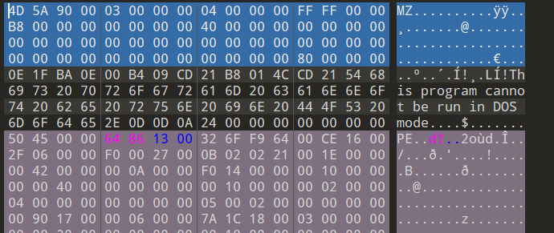
可以看到该程序的0x40-0x80为DOSStub
DOSStub
DOS插桩程序，通常称为DOS Stub，是PE格式（可执行文件格式）中的一个特殊部分。它位于PE文件的起始位置，位于MZ文件头和PE文件头之间。这个DOS插桩程序在PE文件中并不实际执行任何功能，它只是一段用于兼容旧的DOS操作系统的程序代码。DOS插桩程序的大小通常不固定，但通常在16字节到64字节之间。在你提供的上下文中，该部分的范围是040h到0afh，这意味着它的大小是从第64字节（040h）到第175字节（0afh）。
下面是有关DOS插桩程序（DOS Stub）的详细解释：
- 兼容性：DOS插桩程序的存在是为了确保新的PE格式可执行文件能够在旧的DOS环境中执行。这种情况在Windows 9x/ME系列中尤其重要，因为它们仍然基于DOS内核。当用户双击一个PE格式的可执行文件时，DOS插桩程序会被DOS解释器执行，然后DOS解释器会显示一个错误消息，指示该程序需要在Windows环境下运行。
- 功能：DOS插桩程序通常只包含一些文本和/或ASCII艺术字，以及一个指向PE文件头的偏移量的信息。这些信息可以是作者的名称、版权信息、程序的简短描述等。DOS插桩程序不执行实际的计算或操作，它只是一个简单的信息显示和兼容性支持部分。
- Offset to New EXE Header：DOS插桩程序中的一个重要字段是“Offset to New EXE Header”（通常位于偏移地址3Ch处），它指示了PE文件头的位置。当DOS解释器运行DOS插桩程序时，它会根据这个字段找到PE文件头，并将控制权传递给PE文件头中的程序入口点，从而启动Windows程序的执行。
- 定制化：一些开发人员会自定义DOS插桩程序，以显示自己的信息、图标或欢迎消息。这使得PE文件在打开时可以显示一些有用的信息，但这些信息与程序的实际功能无关。
总之，DOS插桩程序是PE格式可执行文件中的一个小的DOS兼容性部分，用于在旧的DOS环境中显示一些信息并传递控制权给PE文件头，以便启动Windows程序的执行。在绝大多数情况下，它对于程序的功能没有直接影响，但可以提供一些用户友好的信息。
==以上信息来自询问chat==
PE
了解到windowsPE文件格式信息的相关定义都在==winnt.h==，通过以下链接下载查看
修复 Winnt.h 问题 - 如何下载并修复 (exefiles.com)
PE文件头
NT_HEADERS
根据010editor查看NT_HEADERS相关定义
64bit：
typedef struct _IMAGE_NT_HEADERS64 { |
32bit:
typedef struct _IMAGE_NT_HEADERS { |
由上可知IMAGE_NT_HEADERS定义了3个成员变量，
Signature固定为字符PE；FileHeader指向一个为IMAGE_FILE_HEADER的结构体；- 在32位下
OptionalHeader指向一个IMAGE_OPTIONAL_HEADER32的结构体。在64位下，OptionalHeader指向一个IMAGE_OPTIONAL_HEADER64的结构体。
IMAGE_FILE_HEADER
typedef struct _IMAGE_FILE_HEADER { |
IMAGE_FILE_HEADER以下变量较为重要
Machine：每个CPU都有一个唯一的Machine码，兼容32位Intel x86芯片的machine码是14c。其它Machine码可在winnt.h中查看。NumberOfSections: 指示文件中存在的节区数量， 此值是一定要大于0，且当定义的节区数与实际的节区数不一样时，将发生运行错误。SizeOfOptionalHeader：标识IMAGE_NT_HEADERS第三个成员变量OptionalHeader的大小。Characteristics：标识文件属性，是否是dll，是否可执行等信息。
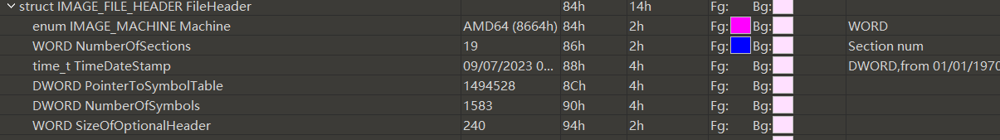
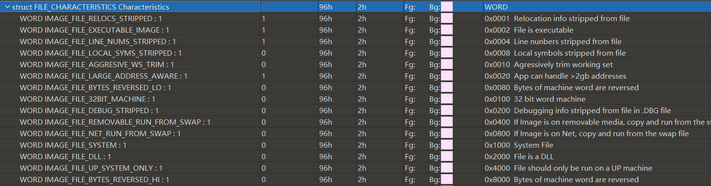
FILE_CHARACTERISTICS Characteristics的各字节代表的意义如上图
可以看到010Editor帮我解析出了相应的结果
_IMAGE_OPTIONAL_HEADER
扩展PE头在32位和64位系统上大小是不同的，在32位系统上有224个字节，而在64位系统上是240个字节，定义分别如下：
typedef struct _IMAGE_OPTIONAL_HEADER { |
typedef struct _IMAGE_OPTIONAL_HEADER64 { |
比对两者区别可以看到在如这些DWORD和ULONGLONG部分
DWORD SizeOfStackReserve; |
（来点chat
ULONGLONG：
ULONGLONG是一个无符号的64位整数数据类型。- 它通常用于表示非负整数，其范围从0到18,446,744,073,709,551,615。
ULONGLONG在Windows环境下非常常见，尤其是在处理大整数或需要64位整数精度的情况下。- 在C/C++中，
ULONGLONG常常用于 Windows API 中，以及在处理文件大小、时间戳等需要大范围整数表示的情况下。
==部分成员变量说明：==
ImageBase：指出文件被加载到内存应该被优先加载的内存地址，exe,dll文件被装载到用户内存的0~7fffffff中，sys文件被载入内存的80000000~ffffffff中，一般情况下，exe会被装载到00400000，dll文件的ImageBase值为10000000NumberOfRvaAndSizes是PE文件的可选头（Optional Header）中的一个字段，用来指定DataDirectory数组的实际大小。DataDirectory是一个重要的结构，它包含了各种数据目录（Data Directory）的条目，这些目录描述了PE文件中包含的各种数据，如导出表、导入表、重定位表等。在
winnt.h中，IMAGE_NUMBEROF_DIRECTORY_ENTRIES被明确定义为16，这是一个常数，表示DataDirectory数组的最大容量，也就是说，PE文件中可以包含最多16个数据目录的条目。然而，实际的PE文件可能不会使用所有16个数据目录，因此
NumberOfRvaAndSizes字段的值用来指示DataDirectory数组中实际包含的数据目录的数量。PE loader（PE文件加载器）会根据这个字段的值来识别DataDirectory的大小，只读取前面若干个有效的数据目录条目，而忽略未使用的条目。这种设计允许PE文件在不使用所有16个数据目录的情况下，节省一些空间，同时也允许在将来的扩展中添加新的数据目录而不需要改变文件格式。通过动态识别实际使用的数据目录数量，PE loader 可以适应不同的PE文件，以提高灵活性和互操作性。
DataDirectory是由IMAGE_DATA_DIRECTORY结构体数据组成的，数组中的每一项都有定义，详细如下：IMAGE_DATA_DIRECTORYtypedef struct _IMAGE_DATA_DIRECTORY {
DWORD VirtualAddress;
DWORD Size;
} IMAGE_DATA_DIRECTORY,*PIMAGE_DATA_DIRECTORY;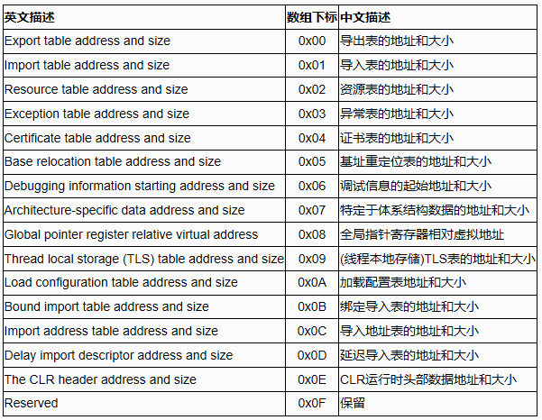
IMAGE_SECTION_HEADER
节区头由IMAGE_SECTION_HEADER定义，节区头的结构如下。
typedef struct _IMAGE_SECTION_HEADER { |
了解以下数据：
Name：非必须以NULL结束，也未限制只能使用ASCII,可放入任何值VirtualSize: 内存中节区所占大小VirtualAddress: 内存中节区起始地址(RVA)SizeOfRawData: 磁盘文件中节区所占大小PointerToRawData:磁盘文件中节区起始位置Charateristics：节区属性。
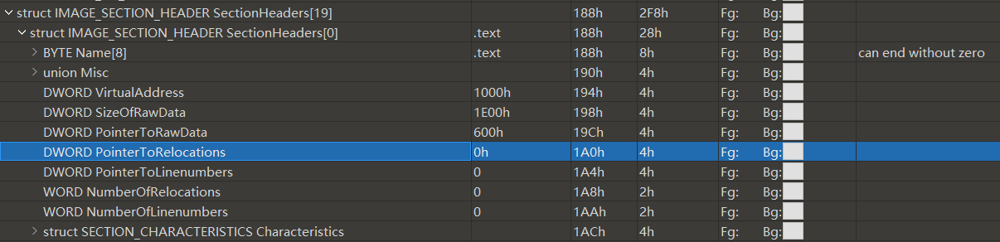
IMPORT_DESCRIPTOR
在IMAGE_OPTIONAL_HEADER头中的最后一个成员变量，我们有提到其是一个包含16个元素的IMAGE_DATA_DIRECTORY数组，其中第2个元素就是导入表的起始位置。
复习下DATA_DIRECTORY
typedef struct _IMAGE_DATA_DIRECTORY { |
typedef struct _IMAGE_IMPORT_DESCRIPTOR { |
如何确定导入表的地址参考以下文章：
Name这里的地址值也是RVA(相对虚拟地址)，查找方式相似
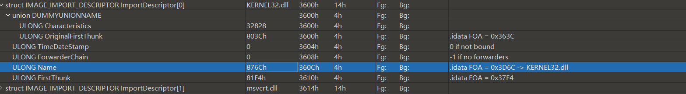
OriginalFirstThunk - INT (Import Name Table)
根据以上方式，我们可以找到
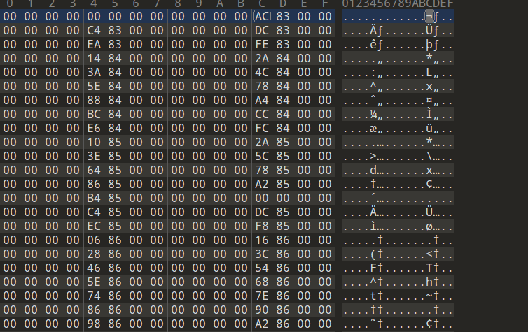
64位程序INT 数组长度为8个字节，最中INT以0x00000000结束
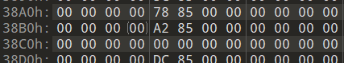
对应即可找到IMAGE_IMPORT_BY_NAME
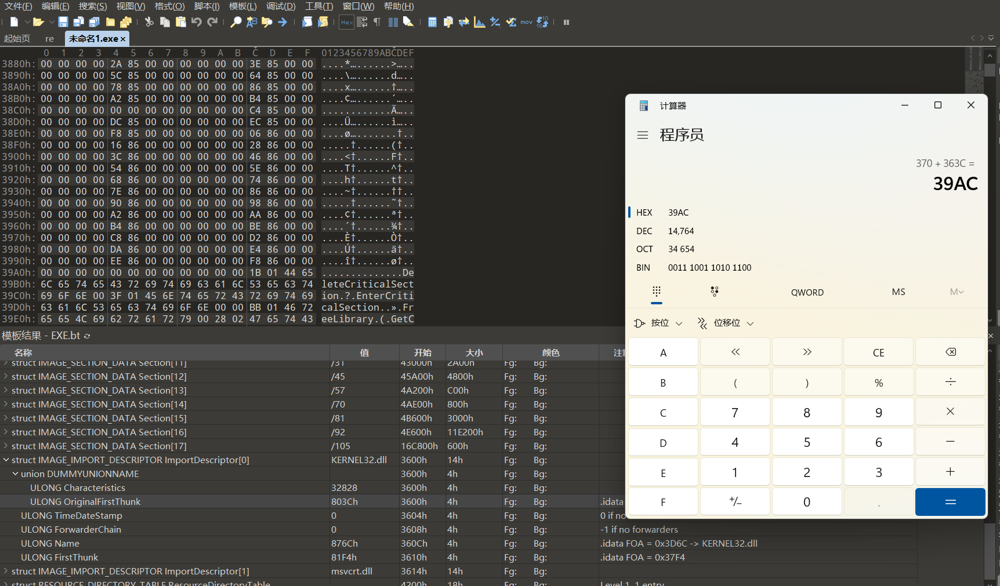
IMAGE_IMPORT_BY_NAME结构如下
typedef struct _IMAGE_IMPORT_BY_NAME { |
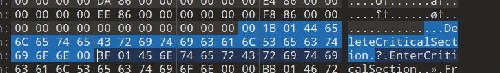
FirstThunk- IAT (Import Address Table)
由FirstThunk可找到程序的Import Address Table
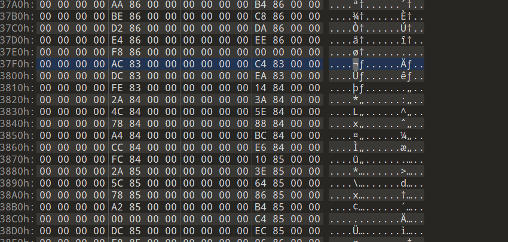
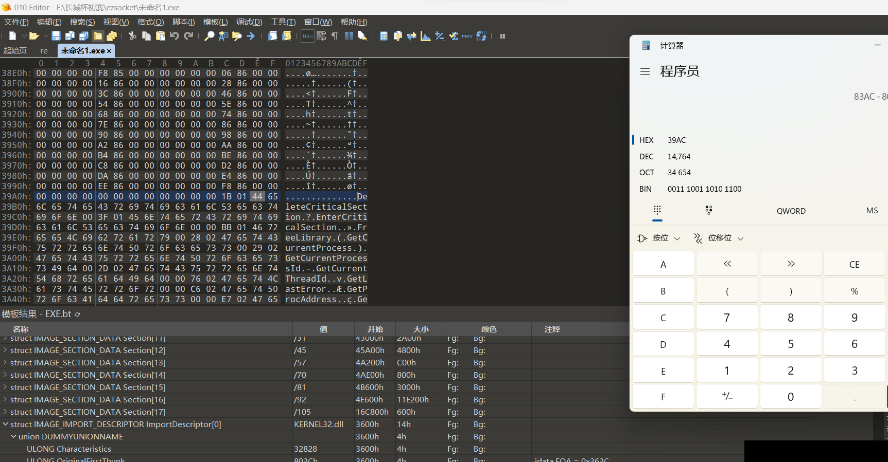
为了区分PE加载前还是加载后，故需要两个地址，如果是加载前，IAT跟INT一样，都可以找到依赖的函数名称，如果是加载后。也就是在内存中的话，
那么IAT表保存的就是函数的地址。
IAT构建过程
PELoader（Portable Executable Loader）是用于加载和执行PE（Portable Executable）格式的Windows可执行文件的程序，它的主要任务之一是构建IAT（Import Address Table），其中包含了程序需要引用的外部函数的地址。以下是构建IAT的步骤的详细解释：
- 读取IID的Name成员，获取库名称字符串：
- PELoader首先会读取导入描述符（Import Descriptor，通常简称IID）的Name成员，这个成员包含了被引用库的名称字符串（例如："kernel32.dll"）。
- 这个库名称用于后续的动态链接库加载。
- 装载相应库：LoadLibrary：
- PELoader使用
LoadLibrary函数来加载相应的动态链接库（DLL），以便程序可以在运行时引用其中的函数。- 在这个步骤中，PELoader会使用之前获取的库名称字符串（例如："kernel32.dll"）来加载相应的库。
- 读取IID的OriginalFirstThunk成员，获取INT地址：
- IID的OriginalFirstThunk成员包含了指向INT（Import Name Table）的地址，INT中包含了导入函数的信息。
- PELoader读取OriginalFirstThunk成员，获取INT的地址。
- 逐一读取INT中数组的值，获取IMAGE_IMPORT_BY_NAME地址：
- INT是一个数组，每个元素都指向一个IMAGE_IMPORT_BY_NAME结构，该结构包含了导入函数的信息，包括函数的名称（Name）和序号（Hint）。
- PELoader逐一读取INT中的元素，并获取IMAGE_IMPORT_BY_NAME的地址（RVA）。
- 使用IMAGE_IMPORT_BY_NAME的Hint或Name项，获取相应函数的起始地址：GetProcAddress：
- 对于每个IMAGE_IMPORT_BY_NAME结构，PELoader使用其中的Hint和Name项来获取相应函数的起始地址。
- 如果Hint有效，则根据Hint来获取函数地址；如果Hint无效，则根据Name来获取函数地址。
- PELoader使用
GetProcAddress函数来实现这一步骤。- 读取IID的FirstThunk（IAT）成员，获得IAT地址：
- IID的FirstThunk成员包含了指向IAT（Import Address Table）的地址，IAT是用来存储导入函数的地址的表。
- PELoader读取FirstThunk成员，获取IAT的地址。
- 将上面获得的函数地址输入相应IAT数组值：
- 对于每个导入函数，PELoader将前面获取的函数地址写入到相应的IAT数组值中，以便程序在运行时可以直接调用这些函数。
- 重复以上步骤4～7，直到INT结束（遇到NULL）：
- PELoader会重复上述步骤4至7，处理INT中的每个元素，直到遇到一个NULL项，表示导入函数列表的结束。
通过以上步骤，PELoader构建了IAT，其中包含了导入函数的地址，使得程序在运行时可以正确地引用和调用外部函数。这是动态链接的核心机制，允许程序在运行时加载和使用外部库中的函数，从而实现了模块化和动态性。
EXPORT_DIRECTORY
导出表由结构体IMAGE_EXPORT_DIRECTORY定义。在PE文件中，IMAGE_EXPORT_DIRECTORY结构体数组的起始位置由IMAGE_OPTIONAL_HEADER32.DataDirectory[0].VirtualAddress给出。
我们先看下IMAGE_EXPORT_DIRECTORY的定义：
typedef struct _IMAGE_EXPORT_DIRECTORY { |
Windows 中通过
GetProcAddress函数来查找导入函数地址的工作原理。GetProcAddress用于从一个已加载的动态链接库（DLL）中获取特定导入函数的地址。以下是这个过程的详细解释：
- 利用AddressOfNames成员转到“函数名称数组”：
- 首先，Windows 根据
AddressOfNames字段的值，找到存储函数名称的数组，该数组中包含了导入函数的名称的地址（RVA，相对虚拟地址）。- “函数名称数组”中存储字符串地址：
- 这个数组中的每个元素都是一个指向函数名称的地址（RVA）。这些地址实际上指向了导入函数的名称字符串，例如
"MessageBoxA"。- 通过比较字符串，查找指定的函数名称：
- Windows 会遍历这个函数名称数组，比较其中的字符串，以查找与你传入的函数名称匹配的字符串。
- 当找到匹配的字符串时，Windows 记录下字符串的位置，这个位置的索引通常称为
name_index。- 利用AddressOfNameOrdinals成员，转到ordinal数组：
- 在导入表中，有一个
AddressOfNameOrdinals字段，它指向一个与名称数组对应的数组，称为名称序号（Ordinal）数组。- 这个名称序号数组包含了导入函数名称的序号，这些序号对应于名称数组中的函数名称。
- 在ordinal数组中通过name_index查找相应的值：
- Windows 使用之前找到的
name_index，在名称序号数组中查找相应的序号。这个序号通常是一个整数。- 利用AddressOfFunction成员转到“函数地址数组”：
- 在导入表中还有一个
AddressOfFunctions字段，它指向一个数组，这个数组包含了导入函数的实际地址。- 在“函数地址数组”中将刚刚求得的ordinal用作数组索引：
- 使用步骤5中获得的序号（ordinal），Windows在函数地址数组中查找相应的元素。
- 这个元素实际上就是你要查找的导入函数的地址。
- 获得指定的函数起始地址：
- 当找到了匹配的序号时，Windows会返回相应的函数地址，这个地址就是导入函数的起始地址。
- 通过这个地址，程序可以调用导入函数。
总之，
GetProcAddress函数的工作原理是在导入表中查找函数名称，然后通过名称在名称序号数组中找到对应的序号，最后使用序号在函数地址数组中找到函数的地址。这使得程序能够在运行时根据名称来动态获取和调用不同的导入函数。